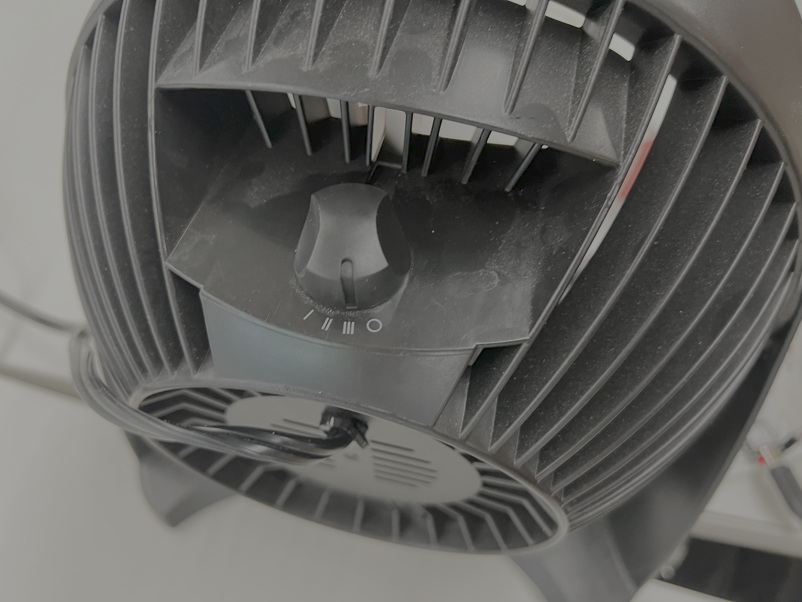
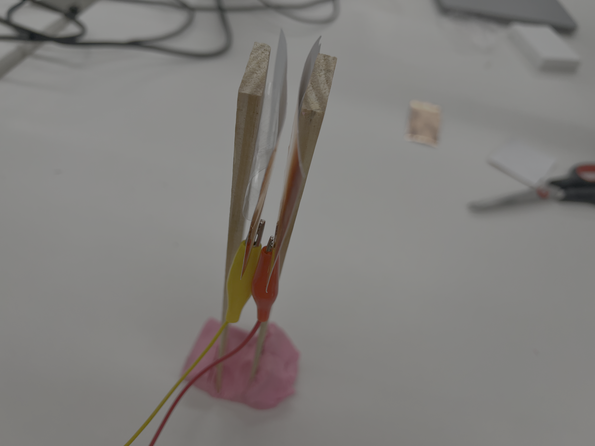
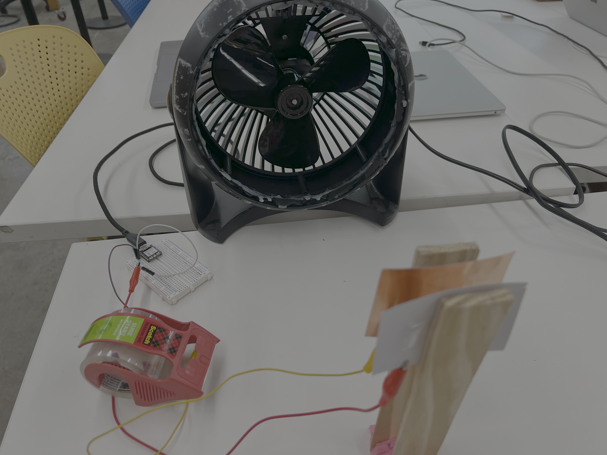
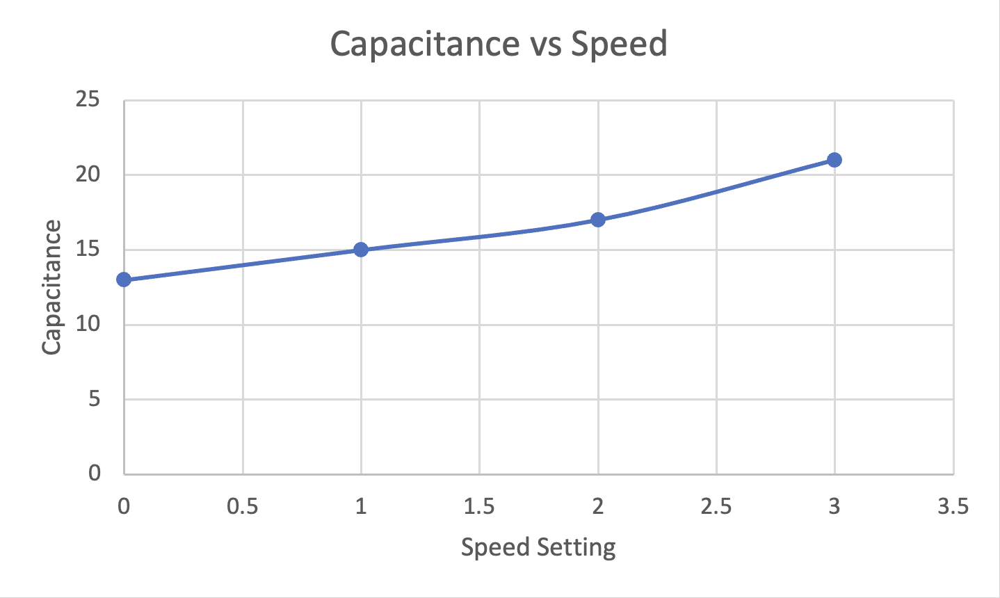
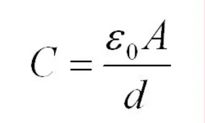
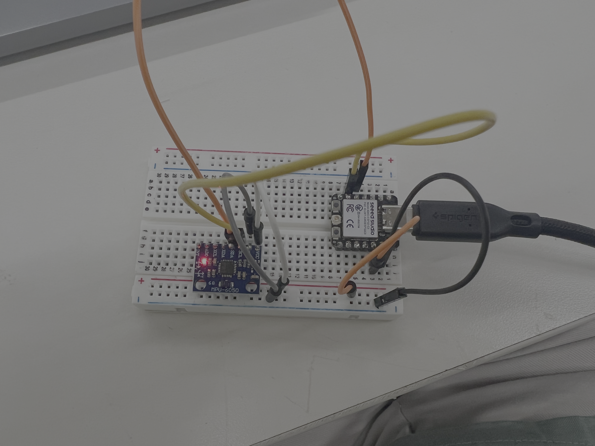
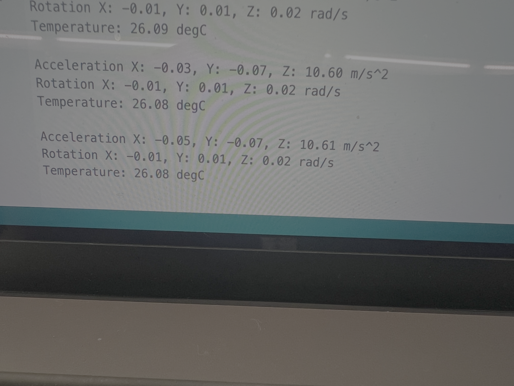
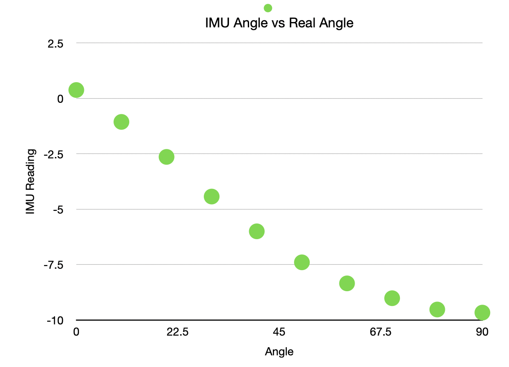

Week 6: Inputs
Assignment 1: DIY Capacitive Sensor
For this assignment, I worked in a team of 4 to use two copper foil capacitive plates to measure wind velocity based on the speed setting of a fan.

The fan used for this experiment.
Out initial idea was to attach one fixed plate to the top of the fan shown above, and have one moving plate hang over the fan opening. This moving plate would then be blown upwards towards the fixed plate, changing the capacitance. However this turned out to be too difficult, given the weight of the moving plate with the attached crocodile clips overcame the force from the wind.


CAD & Circuit Design Process
We therefore changed our idea, and with Nathan's help, setup the two plates directly in front of the fan as shown in the image above. Both plates were attached to small wooden planks, and held to the table with play-doh. The fixed plate was attached much more securely to the play-doh, whereas the moving plate was loose. The fan only had 4 settings: Speeds 0-3.
DIY Capacitive wind-speed sensor demo.
As can be seen from the video above, the sensor does actually work! Look in particular at the first two digits of the values being output to the Arduino serial monitor, and it's clear that these incerase as the fan speed increases. There is a lot of instability in the output values so to general environmental noise, and the two plates vibrating small amounts, so when taking readings, I just used the first two digits. Another challenge was that at fan speed 3, the plates would sometimes touch, so there a lot of adusting the planks and the fan distance.


Capacitance vs fan speed graph 7 Capacitance equation.
As there are only 4 data points, the relationship between speed and capacitance shown on the graph is not necessarily accurate. There is a clear upwards trends: As the speed increases, the plates get closer together and the capacitance increases, however it is difficult to say whetehr this is a linear or exponential relationships. According to the equation shown in the image above, as the distance decreases, the capcitance increases exponentially. Given an increasing fan speed leads to a decreasing distance, we should expect an exponential upwards trend on the graph, which we may be starting to see between settings 2 and 3.
Something else to note, is given the moving plate is not strictly moving linearly towards the fixed plate - it swings - the overlapping area technically does not stay constant, so it also behaves like a variable in the equation for this setup, though it is minor.
Assignment 2: Existing Sensor Behaviour Study
I chose the IMU-6050 sensor, as I will be using it in my final project - so it's good to get an idea of how well it works - and because it measures many things at once: Acceleration (X, Y, Z), Rotation (X, Y, Z), and temperature.

Circuit that enables IMU readings.
To keep things simple, I chose to study the acceleration around the Y axis and how it varies with the angle of tilt. I sourced a generic code for the IMU sensor from Random Nerd Tutorials . I then edited the code (Originally made for a standard Arduino Uno) to read the I2C pins on the Xiao.


Angle testing setup & IMU readings.
I used a large full-circle protractor to track the angle. I kept it fixed and level by using the edge of a table and some tape, and positioned the right edge of the breadbaord in line with the centre of the circle. I then read just the acceleration in Y values from the serial monitor.

Actual angle vs IMU angle plot.
Between 0 and 60 degrees, the relationship between the real and measured values is near linear, with a slight zero-error (Fixed with calibration). However as I tilt the board beyond 60 degrees, we see a plateauing of the curve and a more exponentially decay relationship appearing. I am not sure why this appears at this point though. Could it be because to measure acceleration in Y, the sensor actually measures the CHANGE in vertical tilt which is large at shallow angles but small at larger angles?